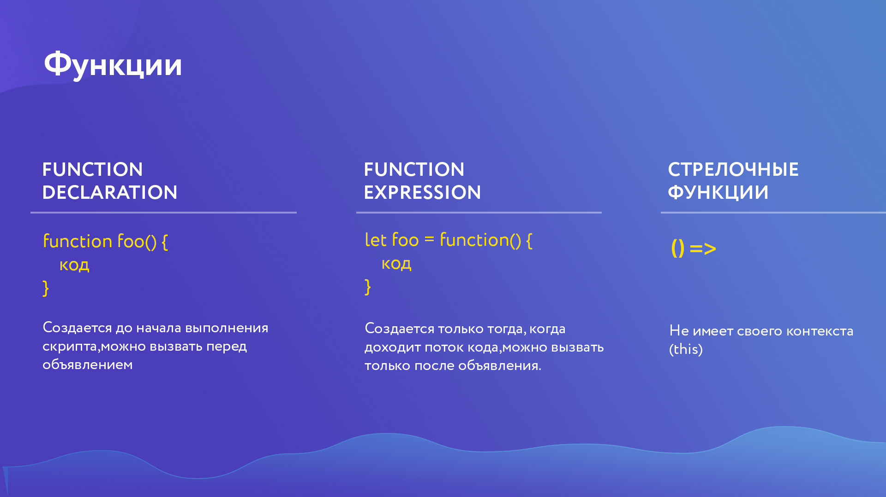
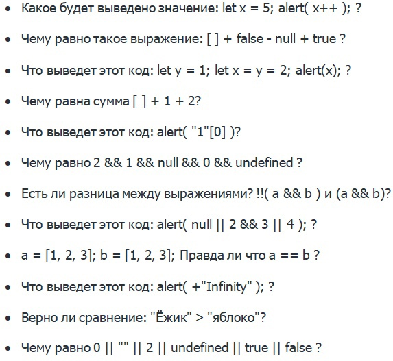

- Как проходить курс Ответы на ДЗ
- Настройка рабочего пространства
- All Autocomplete
- Auto Close Tag
- Auto Complete Tag
- Auto Rename Tag
- Beautify
- Code Runner
- Import Cost
- JavaScript (ES6) code snippets
- jshint
- Live Server
- Multiple clipboards for VSCode
- Reactjs code snippets
- Sass
- Theme - Oceanic Next
- vscode-icons
- ESLint
- Как работать с JSHint JSHint options
- Список необходимых плагинов:
Скачать NodeJS
Файл настроек .jshintrc:
{
{
"camelcase" : true,
"indent": 2,
"undef": true,
"quotmark": false,
"maxlen": 120,
"trailing": true,
"curly": true,
"strict": false,
"browser": true,
"devel": true,
"jquery": true,
"esversion": 9,
"node": true
}
- Что такое JS и как его подключить к странице Learn JS - учебник по JavaScript
- Переменные и строгий режим Can I Use
- Классификация типов данных BigInt - новый тип данных
- Простое общение с пользователем Про typeof
- Интерполяция (ES6) Шаблонные строки
- Операторы в JS Таблица приоритетов операторов
- Учимся работать с системой контроля версий Git и сесрвисом GitHub Обучение Git и его возможностям
- Как работать с GitHub с разных компьютеров, gitignore и Git Kraken Скачать Git Kraken
- Условия Принятие решений в коде
- Циклы
- Функции,стрелочные функции (ES6) Очень подробно про замыкания
- Методы и свойства строк и чисел Методы строк
- Callback-функции Callback-функции
- Объекты, деструктуризация объектов (ES6) Деструктуризация объектов
- Массивы и псевдомассивы Алгоритм быстрой сортировки
- Передача по ссылке или по значению,Spread оператор (ES6-ES9) Статья про клонирование
- Основы ООП,прототипно-ориентированное наследование Про __proto__
- Динамическая типизация в JS
- Задачи с собеседований на понимание основ
- Получение элементов со страницы Про селекторы
- События и их обработчики Простой список событий
- Навигация по DOM - элементам, data-атрибуты, преимущество for/of Про data-атрибуты
- События на мобильных устройствах Большая статья с примерами
Строгий режим("use strict")
Стилистика кода:

Тип данных Symbol
Таблица с типами данных:

Про document.write()
Побитовые операторы
GitHub
Документация по Git
Скачать Git
Интерактивное обучение Git
Файл .gitignore:
# See https://help.github.com/articles/ignoring-files/ for more about ignoring files.
# dependencies
/node_modules
/.pnp
.pnp.js
# testing
/coverage
# production
/build
# misc
.DS_Store
.env.local
.env.development.local
.env.test.local
.env.production.local
npm-debug.log*
yarn-debug.log*
yarn-error.log*
# See https://help.github.com/articles/ignoring-files/ for more about ignoring files.
# dependencies
/node_modules
/.pnp
.pnp.js
# testing
/coverage
# production
/build
# misc
.DS_Store
.env.local
.env.development.local
.env.test.local
.env.production.local
npm-debug.log*
yarn-debug.log*
yarn-error.log*
Условия и циклы:

Циклы и
итерации
Замыкания изнутри
Стрелочные функции
Function declaration, function exptession, стрелочные функции:

Методы чисел
Документация по числам
Документация по строкам
Объекты в JS в примерах
Дескрипторы, геттеры и сеттеры
Про for in
Отличия for..of от for..in
Шпаргалка по массивам и объектам

Object.assign()
Spread operator
Наследование без __proto__
Классификация:

cssText
Матрица сравнений

Немного о псевдомассивах
Справочник по событиям
addEventListenet()
Объект события
removeEventListener()
Полезная статья
- ClassList и делегирование событий classlist
- Скрипты и время их выполнения, setTimeout и setInterval JavaScript-анимации
- Работа с датами Документация по Date
- Создание таймера обратного отсчета на сайте Сокращенная запись объетов
- Параметры документа, окна и работа с ними
matches
Делегирование событий 1
Делегирование событий 2
Статья